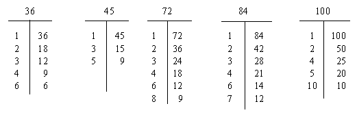
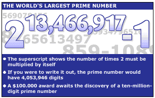

Preface: On this page I present a series of three handout sheets that I
use in my Pre-algebra classes whose purpose is to teach how to find out
if a large number is a prime or not. And by "large", my main concern, as
you will soon see, are numbers greater than 100 and less than 10,000. It
is a bit lengthy, but it was designed to make certain the students have
a firm grasp on the important background concepts necessary to deal with
the work to be done in the whole activity. And it is presumed before
seeing this material that the student already knows what a prime number
is. My prefered definition is: a whole number, greater than one, whose
only factors are itself and one.
BIG PRIMES
Background: I
1. Square root: the square root of a number is a value which when
multiplied by itself produces the given number. Examples:
4 is the square root of 16 because 4 × 4 = 16;
15 is the square root of 225 because 15 × 15 = 225; and
38 is the square root of 1444 because 38 × 38 = 1444.
2. Often a number does not have a whole number square root like the
three examples above. For instance, there are no whole numbers
such that when multiplied by themselves will give us 20, 85, or 150.
For 20, 4 × 4 = 16 is too small; and 5 × 5 = 25 is too big.
For 85, 9 × 9 = 81 is too small; and 10 × 10 = 100 is too big.
For 150, 12 × 12 = 144 is too small; and 13 × 13 = 169 is too big.
3. But by using decimals, we can get closer to the numbers. Observe:
For 20, 4.4 × 4.4 = 19.36 and 4.5 × 4.5 = 20.25 are better choices.
For 85, 9.2 × 9.2 = 84.64 and 9.3 × 9.3 = 86.49 are better choices.
For 150, 12.2 × 12.2 = 148.84 and 12.3 × 12.3 = 151.29 are better
choices.
4. Our calculator can help us find these decimal values more rapidly
than mere guessing. There is a key with a symbol like this:  .
Pressing it after entering your number (on most calculator models)
will give you an approximation of several digits.
For 20, we obtain 4.472135955.
For 85, we obtain 9.219544457.
For 150, we obtain 12.2474487.
Remember: these are just approximations. Unless a number is
the square of a whole number to begin with, the square root can only
be "more or less" good.
5. Just as finding the square of a number -- using the calculator key
identified as x2 -- is a very important idea in mathematics, so is
finding the square root of a number. While the ideas are related, they
are very different; so be careful how you use them.
The square root of 16 is 4; but the square of 16 is 256.
.
Pressing it after entering your number (on most calculator models)
will give you an approximation of several digits.
For 20, we obtain 4.472135955.
For 85, we obtain 9.219544457.
For 150, we obtain 12.2474487.
Remember: these are just approximations. Unless a number is
the square of a whole number to begin with, the square root can only
be "more or less" good.
5. Just as finding the square of a number -- using the calculator key
identified as x2 -- is a very important idea in mathematics, so is
finding the square root of a number. While the ideas are related, they
are very different; so be careful how you use them.
The square root of 16 is 4; but the square of 16 is 256.
 BIG PRIMES
BIG PRIMES
Background: II
6. Earlier in your math study you learned how to make factor charts.
Here are some examples to refresh your memory.

7. A close examination of these charts will show some patterns.
a) The factors on the left side go in small to large order, while
on the right side it is the reverse.
b) The factor pair at the bottom of each chart is the pair with the
smallest difference of any other pair.
c) The last factor on the left side is either the square root of
the chart's number or is less than the square root of the
chart's number.
36 = 6 and 100 = 10 for the first and last charts.
45 = 6.7, 72 = 8.4, and 84 = 9.1 (approximately)
for the others.
8. Those patterns make things easier for us when we wish to find all
the whole number factors for a number. And we will use them when
we start to test large numbers to see if they are prime or not.
9. You see, you were asked to memorize the primes from 1 to 100.
But to ask you to memorize beyond that level is for sure "a bit
much", don't you agree? However, with a calculator, the primes
from 1 to 100, and paper-&-pen, we can decide if numbers that
are much, much larger are prime or not. In the next page, you
will learn how to test for primeness with numbers like 1271, 1653,
2009, and so on.
10. One final point: Our search for primes of any size will be made
more efficient if we remember that, after 2 and 5, primes can only
end with the digits 1, 3, 7, or 9. Without that, the number CANNOT
prime. On the other side of the coin, ending with those digits does
not mean a number IS a prime!
BIG PRIMES
The Lesson
1. Let's begin with an example done step-by-step.
Is 2111 a prime or not?
a) First, we note that it might be a prime because it ends with
the digit "1". (This also means that 2 and 5 cannot be factors.)
b) Next, by adding the digits -- 2 + 1 + 1 + 1-- we get 5. That
is not a multiple of 3, so 2111 is also not a multiple of 3.
c) This leaves us with the task of checking other numbers to see
if they might be factors. But, don't worry, it's not as hard
as it sounds. We only have to use primes.
d) How many primes? Just up to the square root of 2111, and not
any further.
2111 = 45.9 (approx.)
So we will use only the primes from 7 to 43.
2. We will build a chart like before. Put the primes from 7 to 43
in the left side, get out our calculator and get to work -- dividing!
2111
-----|------ You must observe one important thing about the
7 | 301.5 quotients. Since our main concern is whether or
11 | 191.9 not it is a whole number -- thus proving the number
13 | 162.3 is not prime -- I have decided it is sufficient to
17 | 124.1 merely truncate in those cases in which the quotient
19 | 111.1 comes out "in decimals". Besides that, it's easier
23 | 91.7 than having to remember any rounding rules. Okay?
29 | 72.7
31 | 68.0 In this example, we see that 2111 is a prime,
37 | 57.0 because no quotient was a whole number.
41 | 51.4
43 | 49.0 That's all there is to it!
3. Let's try another number: 1003. Since 1003 = 31.6 (approx.),
we only need to try the primes up to 31. (And if we're lucky, we
won't even have to go that far!)
1003
----|------- You see?! This time we found a whole number
7 | 143.2 quotient when we divided by 17, so we didn't
11 | 91.1 have to go all the way up to 31.
13 | 77.1
17 | 59 So 1003 is NOT prime; it is 17 × 59.
Teacher Tips
This ends the three handout sheets. From here on, the lesson may take any form you wish:
- testing a given set of numbers to see if they are prime or not;
- ask students to find 5 or 6 primes in this range of their own choice, providing the charts to support the results;
- make a contest to see who can find the most primes, say from 1000 to 2000, for homework.
When I make a little quiz on this, I use about five numbers, two of which are prime and the rest are not -- just to keep things
honest. In the final analysis, I feel this work makes a "good problem" that takes more than just a minute or so to do, involves important number theoretic ideas, and is made feasible by the intelligent use of the calculator.
In Part II, mention was made about memorizing the primes from 1 to 100. This is not as great a task as it may sound at first. There are only 25 of them, ten of which are less than 30. And when one knows
the divisibility tests for 2, 3, 5, and 7, the memorization is virtually automatic. To ease the task, the 25 primes can be grouped like this:
| 2, 3, 5, 7 | 53, 59 |
| 11, 13, 17, 19 | 61, 67 |
| 23, 29 | 71, 73, 79 |
| 31, 37 | 83, 89 |
| 41, 43, 47 | 97 |
Update (Feb. 2002)

Researchers Discover Largest Multi-Million-Digit Prime
Using Entropia Distributed Computing Grid.
213,466,917 - 1 is now the Largest Known Prime.
For more information, click http://www.mersenne.org/13466917.htm.